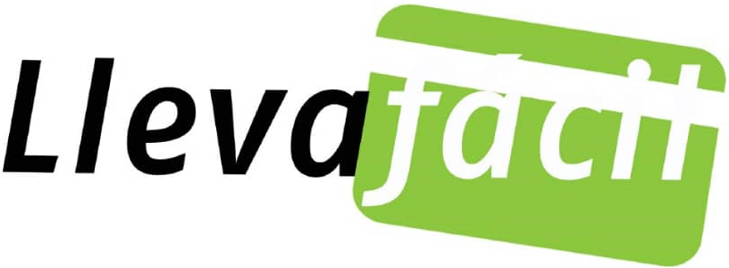
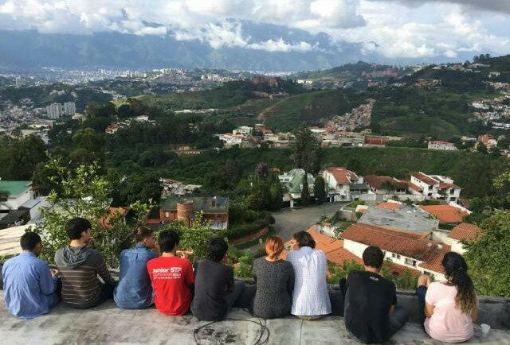

Intro

Me presento, Mi nombre es Alexander Raydan, nací en Venezuela en el año 2000 donde me crié y viví toda mi adolescencia. En el 2017 mi familia y yo decidimos emigrar a Argentina por la complicada situación en venezuela , buscando nuevas
oportunidades y mejor calidad de vida. Ese mismo año fuí aceptado en la Universidad Tecnológica Nacional en la carrera de Ingeniería en Sistemas de Información y actualmente he completado los 2 primeros años de la carrera.
Me empezó a interesar el mundo de la programación empezando la carrera con la materia de Algoritmos y estructura de datos usando el lenguaje C++ y quedé fascinado, a partir de ahí empecé a investigar por mi cuenta nuevos lenguajes,
paradigmas y áreas de la programación, aprendiendo diariamente del maravilloso mundo de la programación. Desde hace un año me dedico a la programación web usando principalmente tecnologías .NET del lado del backend y HTML5 , CSS
y Javascript del lado del frontend.
Trabajo actual

Actualmente estoy trabajando remotamente en el Backend de una aplicación web llamada llevafacil cuya funcionalidad es permitir que un usuario haga una recarga a una tarjeta prepagada del supermercado plaza (en venezuela) con ASP.NET core.
Crear todas las entidades, sistema usuarios , creación y conección a una base de datos SQL , hacer la estructura de las vistas y el mantenimiento de la página.
El objetivo de la organización es ayudar a los familiares de las personas que emigraron de Venezuela aportando una plataforma donde puedan transferir dinero de forma a sus seres queridos.
Link de la página llevafacil.com
Acerca

Soy una persona muy tranquila pero bastante sociable, me integro bien en grupos de personas, me encanta compartir con amigos y conocer personas nuevas. También soy muy curioso , me gusta saber el porqué de las cosas y a raíz de eso me
encantan las ciencias como la matemática , la física y la computación.
La música ha sido una etapa muy importante en mi vida, toco la flauta transversa desde los 8 años empezando en el ensamble de vientos el colegio , posteriormente entré en la orquesta , paralelamente también estaba en el sistema de orquestas tocando en
la orquesta de chacao. Fuí músico orquestal y de música de cámara aproximadamente por 10 años y ha sido una de las mejores experiencia de mi vida, todo lo que me ha aportado la música es incalculable. Actualmente sigo con la música
como hobbie pero con ganas de retomar en un futuro.
Artículos
¿Cómo estar más seguro navegado por internet?

El internet se creó para comunicar computadoras alrededor del punto y no precisamente de forma segura , hoy en día aún existen muchos puntos débiles donde somos vulnerables y la gran mayoría de los casos de hackeo pasan por descuidos que cometemos los
usuarios ¿Como podemos evitar esos descuidos? Les dejo algunas prácticas que uso diario con respecto a:
Contacto
Recoleta, Buenos Aires Argentina
+54 9 11 33267051
alexraydancode@gmail.com